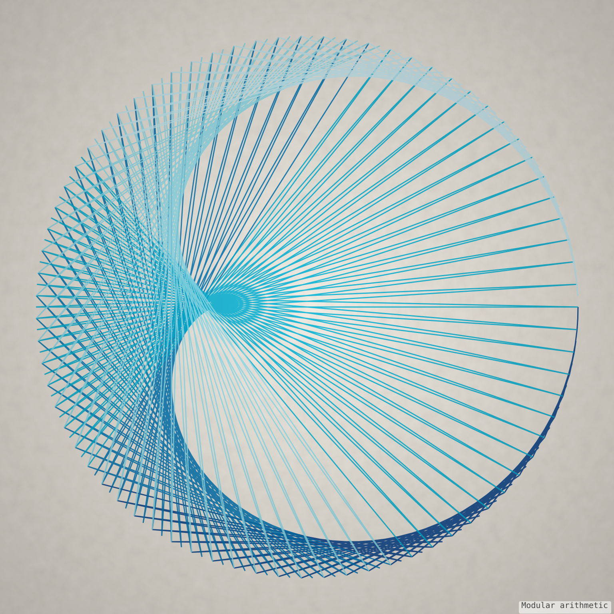
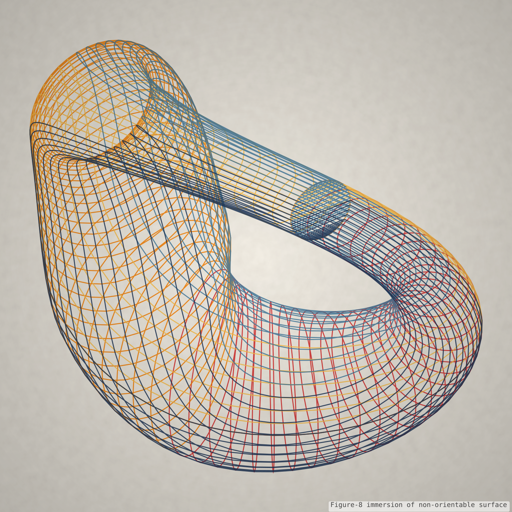
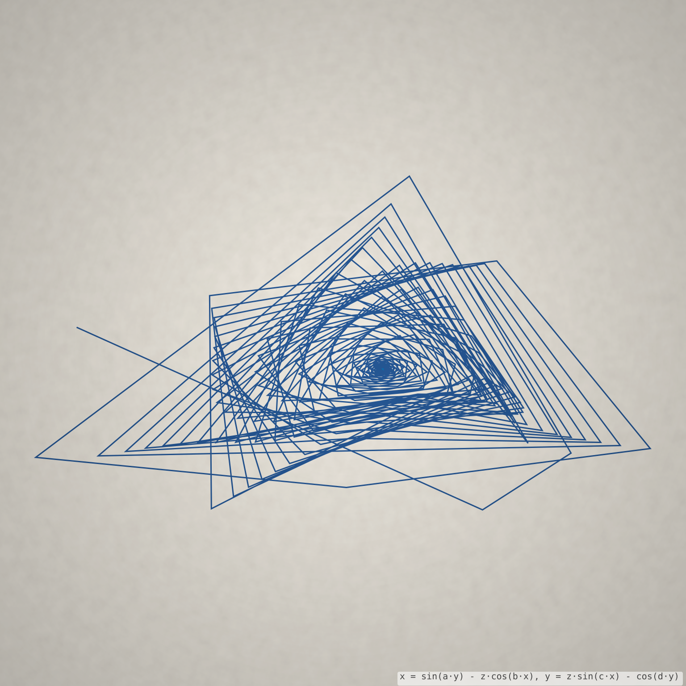
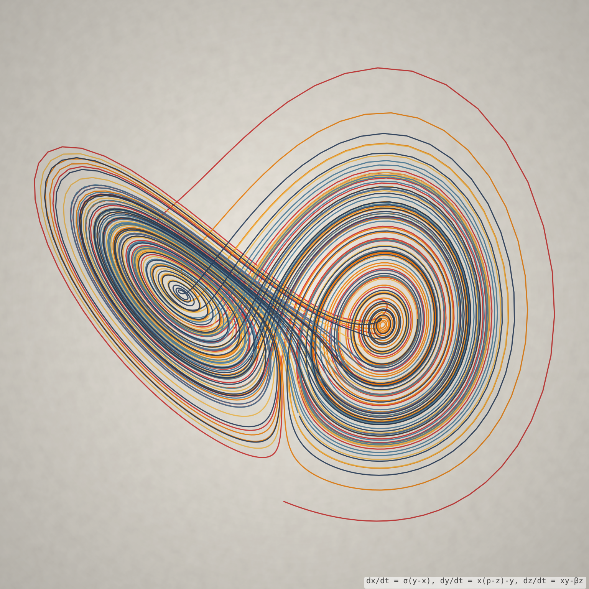
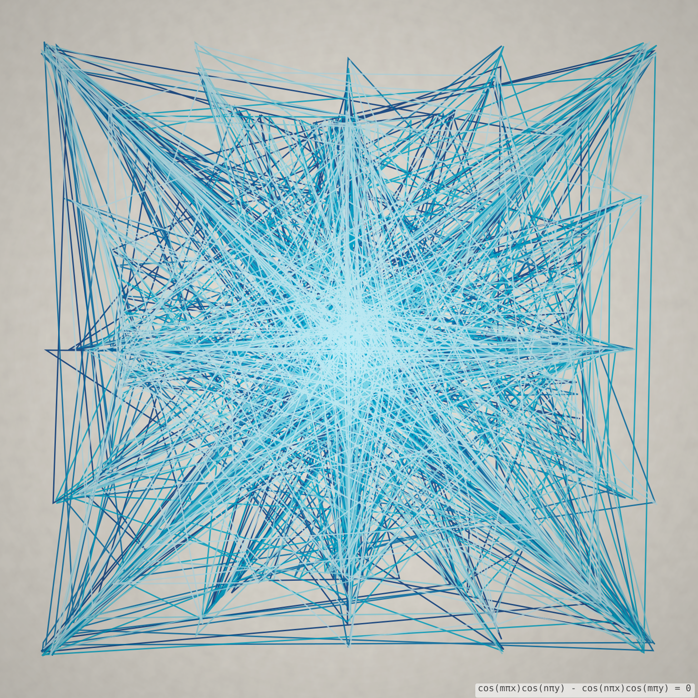
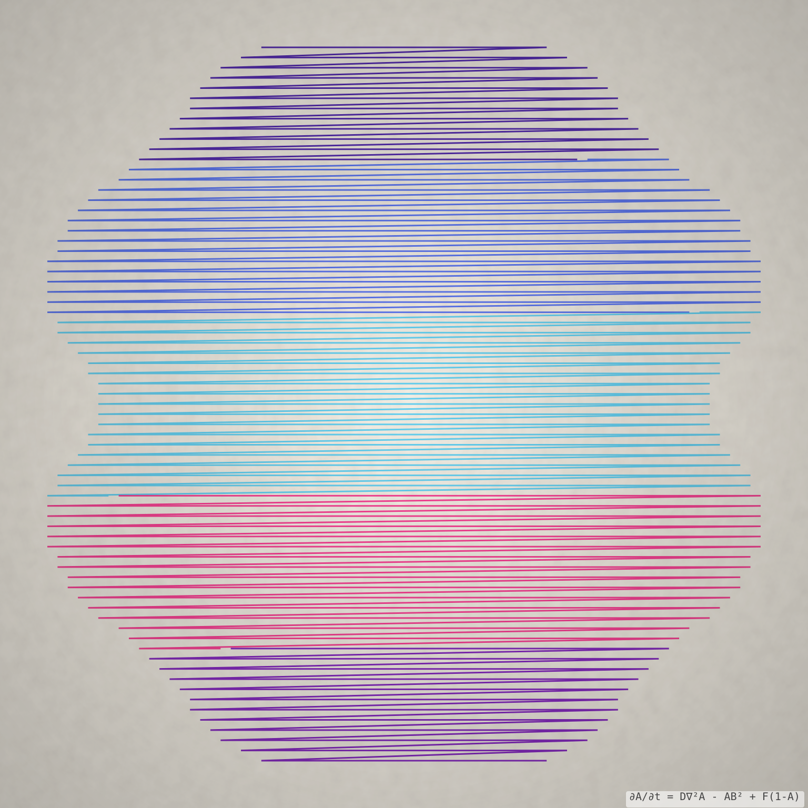
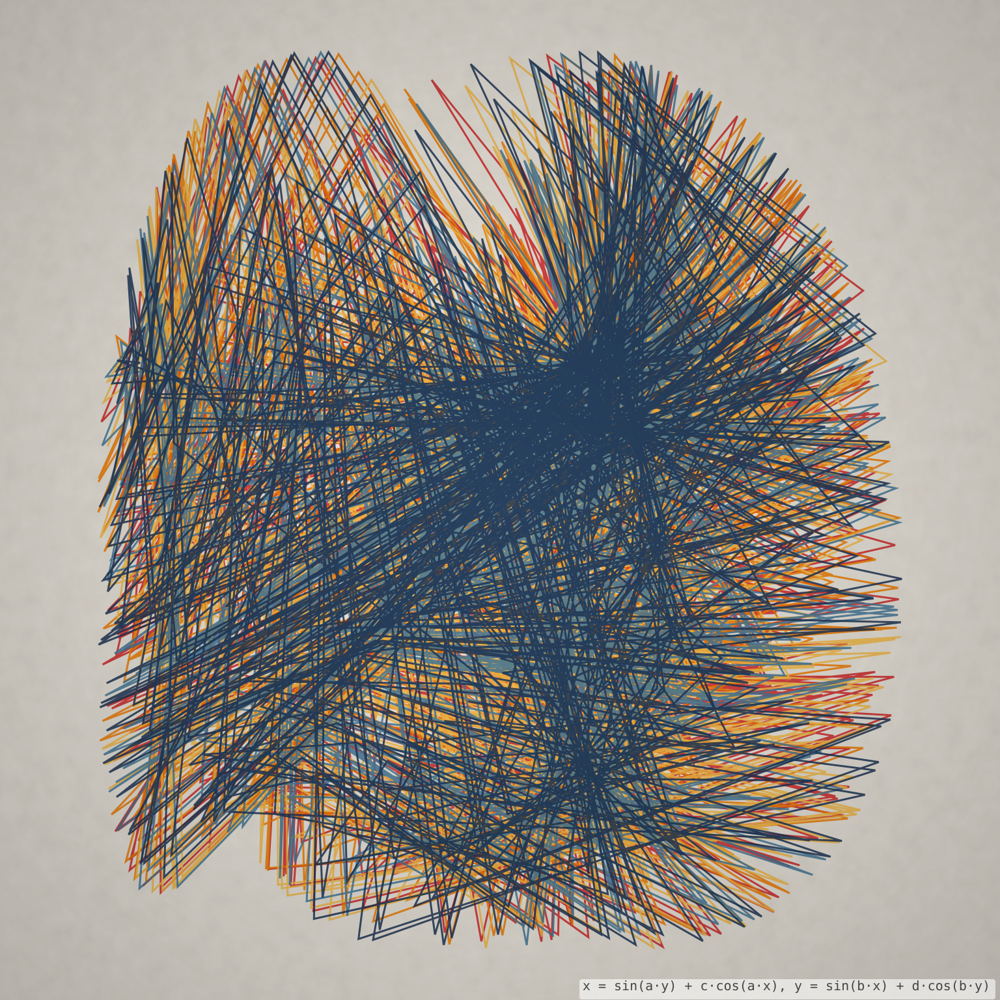
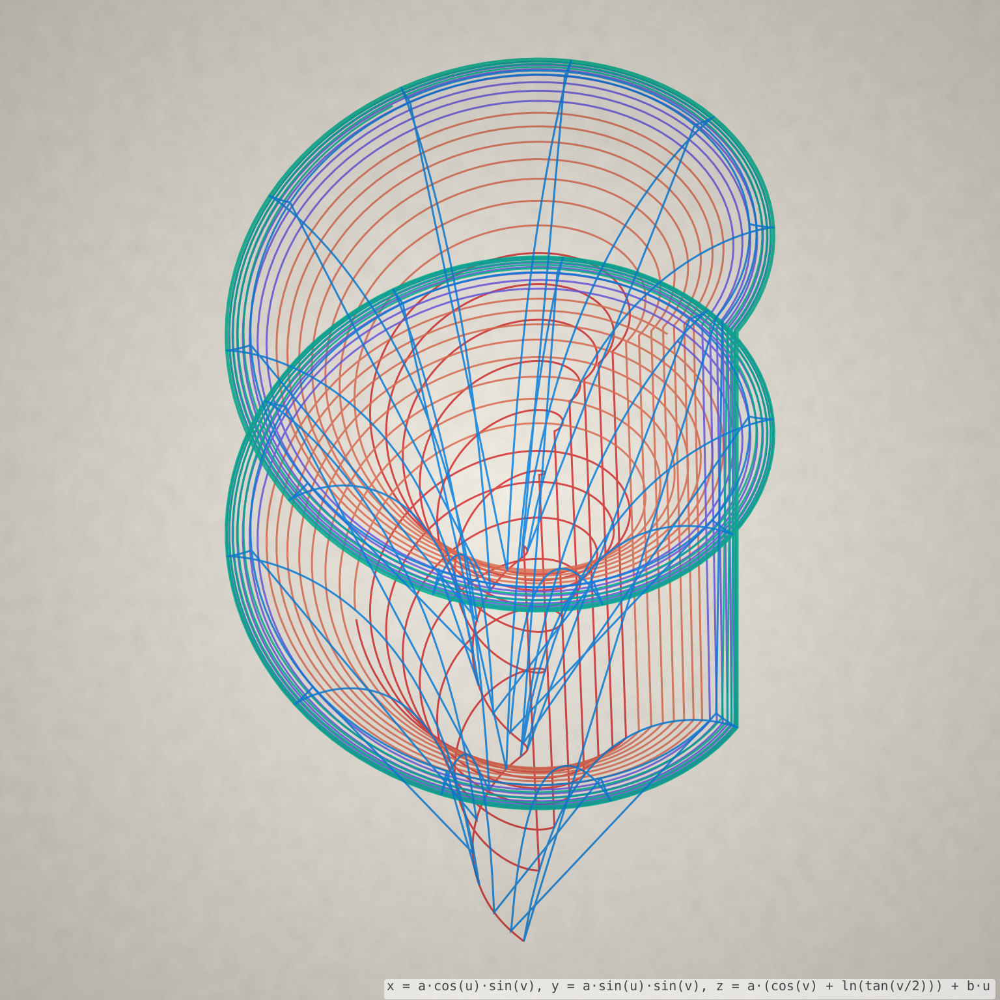
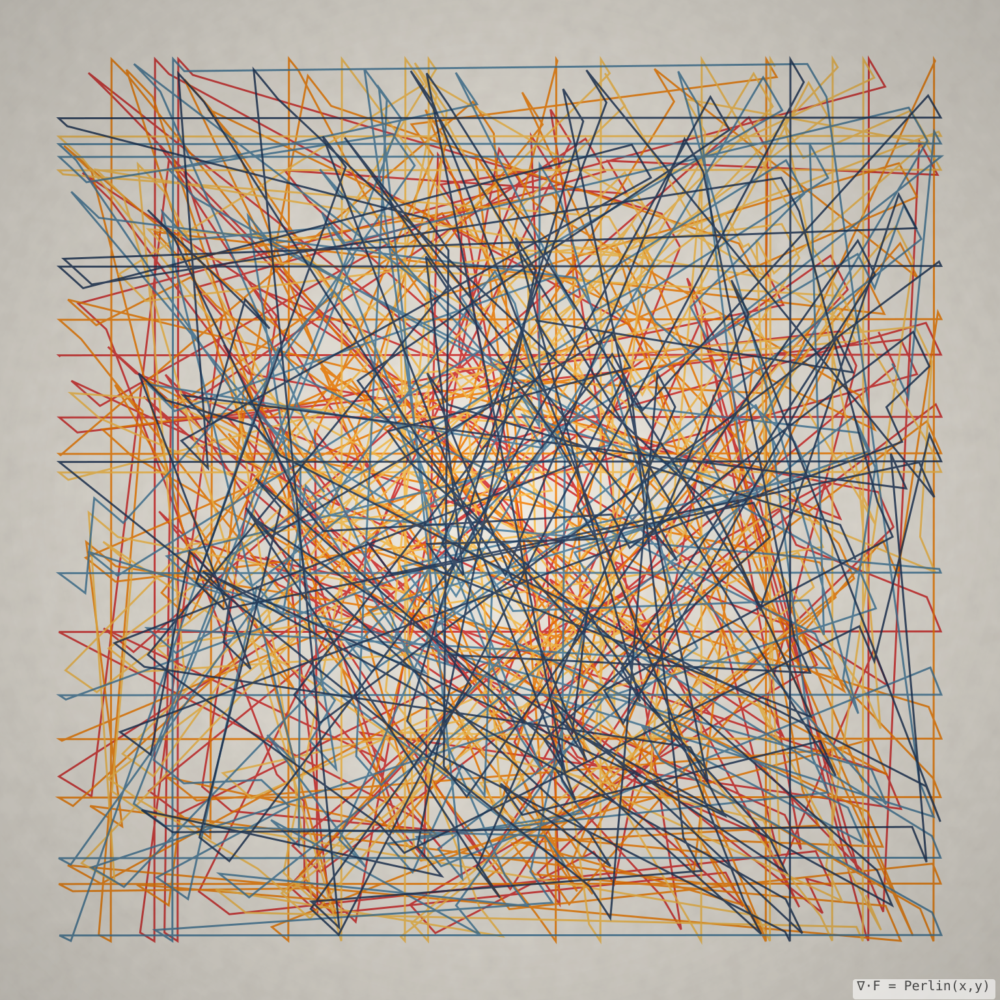

Seashell Surface
A logarithmic-spiral surface that mirrors how mollusks deposit shell material as they grow.
Artistic side
Algorithmically generated pieces from mathart.app, each one a picture of an equation, a dynamical system, or a physical process.
A logarithmic-spiral surface that mirrors how mollusks deposit shell material as they grow.

The trace of a pendulum-driven drawing machine, decaying oscillations turned into curves.

Curves built entirely from straight lines strung between points around a boundary.

A non-orientable surface with no distinct inside or outside, immersed in three dimensions.

Biomorph-like forms grown from iterated functions, in the tradition of Clifford Pickover.

Trajectories of a chaotic system that never repeat, tracing the iconic butterfly shape.

The standing-wave nodal pattern left by sound vibrating a plate at resonance.

Turing-style patterns that emerge from two chemicals diffusing and reacting at different rates.

A strange attractor built by iterating a pair of trigonometric maps millions of times.
Orbital paths from the classic gravitational three-body problem, chaotic and never periodic.

A twisted pseudosphere of constant negative curvature, one of the classic surfaces of hyperbolic geometry.

Particle paths traced through a vector field, visualizing the shape of an invisible flow.